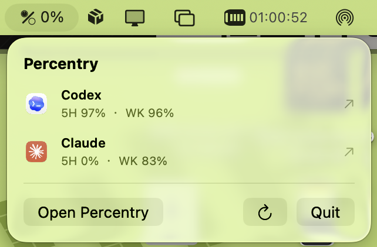
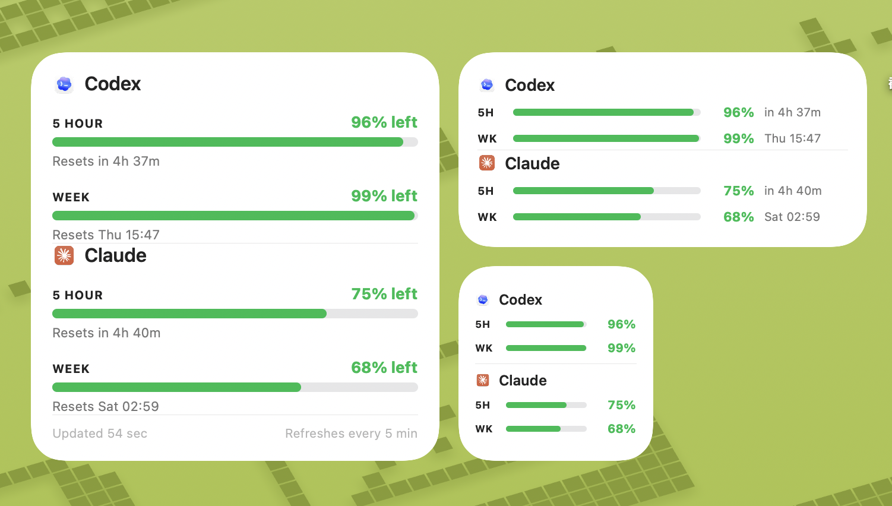
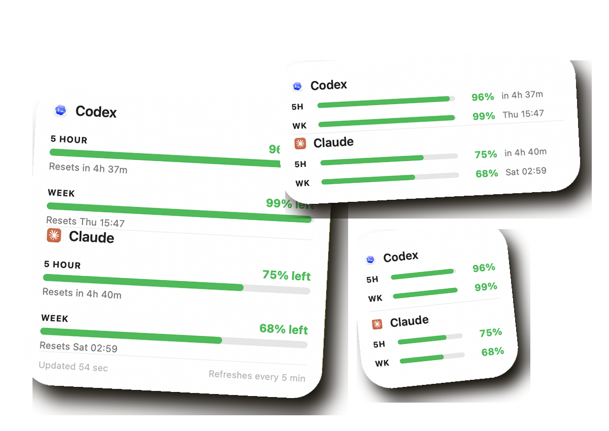
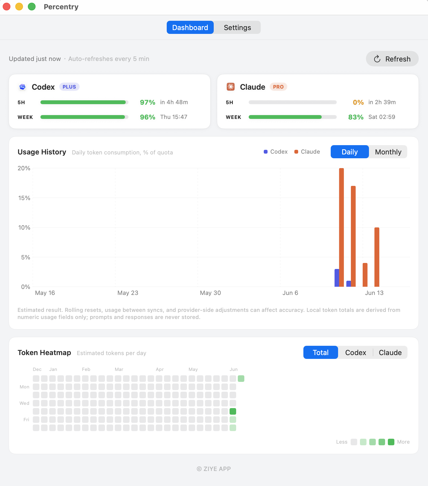
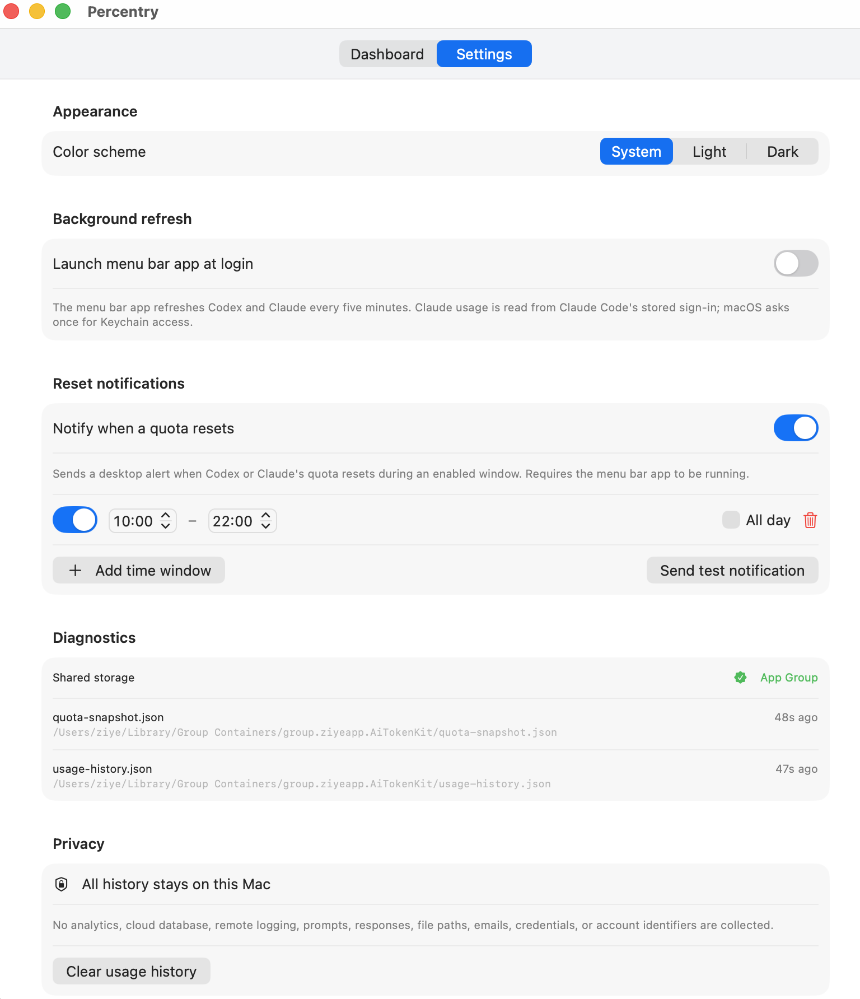

01 / MENU BAR
最紧张的额度，始终在菜单栏
数字显示所有 5 小时窗口里剩余最低的百分比，点开即可分别查看 Codex 与 Claude。

常驻菜单栏，也能放进桌面小组件。查看 5 小时滚动窗口和每周窗口还剩多少额度、什么时候重置，并在 App 内回顾使用历史。

菜单栏负责随时查看，桌面小组件负责一直可见。两种方式都展示剩余百分比和重置时间。
数字显示所有 5 小时窗口里剩余最低的百分比，点开即可分别查看 Codex 与 Claude。

三种尺寸都展示 5 小时与每周额度，每 5 分钟自动更新。


额度卡片、每日或每月使用柱状图，以及按天显示的 Token 热力图，全部汇总在一个紧凑的 Dashboard 中。

设置多个工作时段、单独开关或全天模式。额度在启用时段内重置时，Percentry 会发送桌面通知。
Percentry 不包含统计 SDK、云数据库或远程日志。Codex 数据由本机 codex app-server 提供；Claude 使用 Claude Code 已保存在钥匙串中的凭证，直接查询 Anthropic 官方额度端点。不会向第三方发送提示词、回复或令牌内容。
免费 · Version 1.2 · 2.0 MB · Developer ID 签名 · Apple 公证